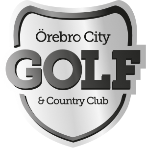

Dra i längdaxelns punkter för att undersöka avstånd från tee.
Vänsterdrag: flytta · Högerdrag: rotera · Scroll: zooma
Ortofoto © Lantmäteriet · CC BY 4.0 · fotograferat 2 maj 2026. Höjdmodell från Lantmäteriet.
Ändringar sparas i Firebase för alla enheter.